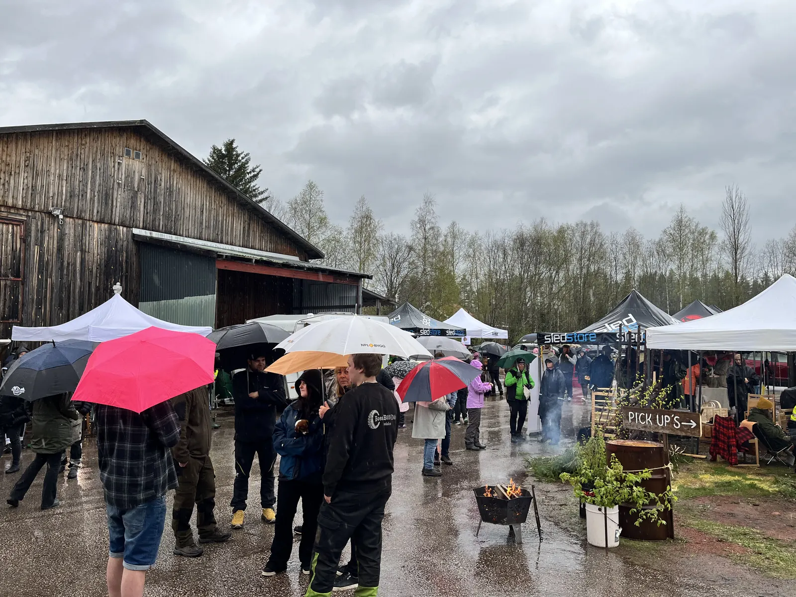

Bilder från 2026
Premiären av Backwoods, 16 maj 2026 på Rotsågen i Rot. Klicka på en bild för att se den större.
Hantverkarna
Smeder, svetsare, täljare, korgmakare och konstnärer som jobbade på plats under premiären.


Folket
Det hällregnade. Folk kom ändå.


Natten på Rotsågen
När det mörknade lyste sågverkstaket i rött och lila, och folk stannade kvar.


Nästa gång: 15 maj 2027
Vill du vara med på bild nästa år? Kom till Rotsågen, eller ställ ut ditt hantverk.